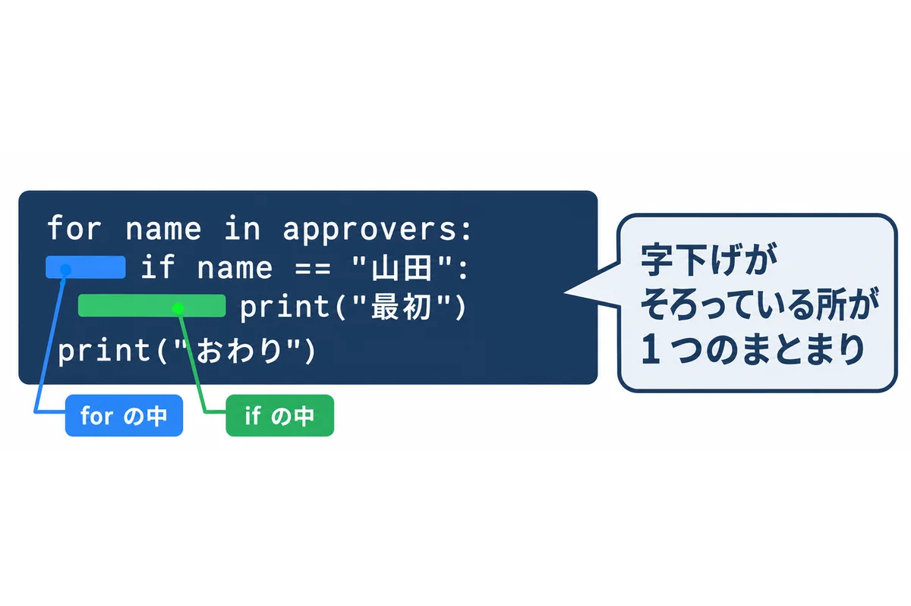
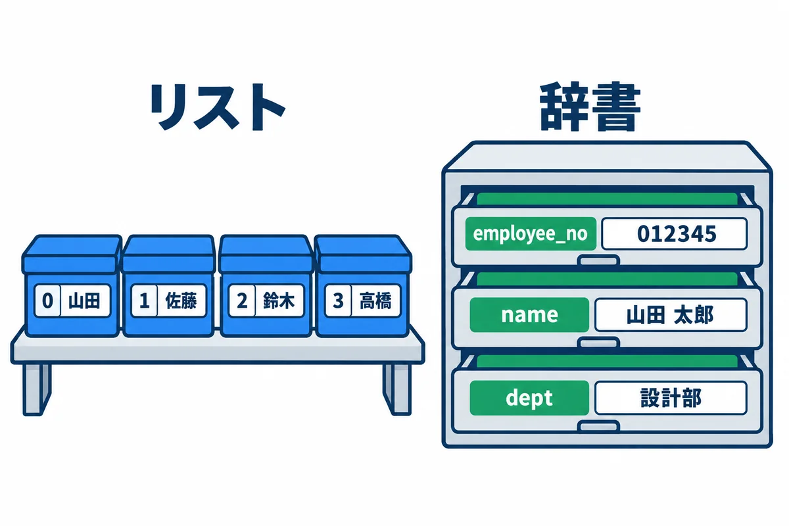
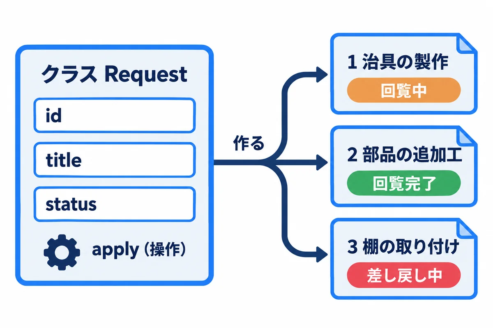
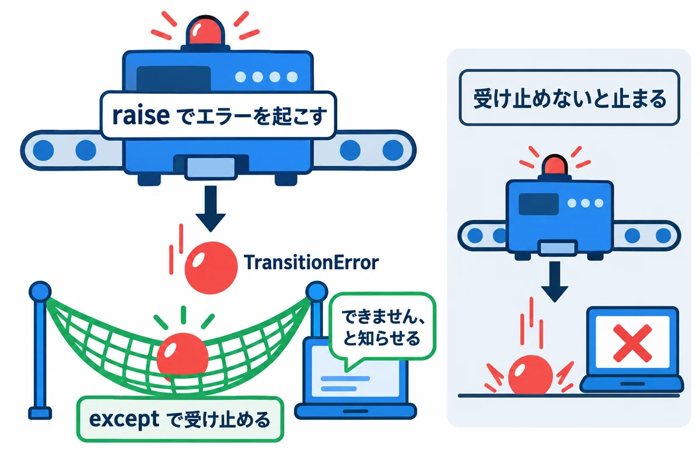
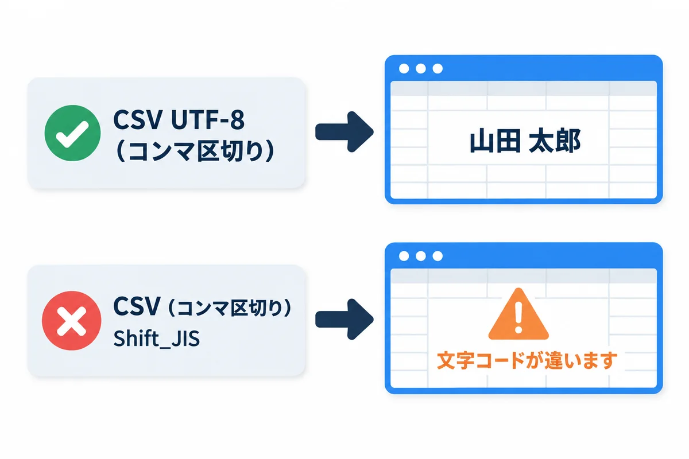

色の付いた枠のコードの、右上の「コピー」ボタンを押してください。コピーしたら、ブラウザーの「戻る」で PDF に戻れます。
pip練習のファイルは samples/04_python/ にあります。この巻の結果は、Python 3.14 で実際に動かした結果です（打つたびに変わる所は、そう書いています）。
もっと詳しく:
docs/06_Python基礎.mdに、Python のより詳しい説明があります。
▶ 準備: 00 の 6.4（Python 3.14）。下のコマンドは、PowerShell で資料のフォルダにいるところから打ちます。練習のファイル（basics.py など）は VS Code で開いて読み、書きかえたら Ctrl ＋ S で保存して、もう一度 .\.venv\Scripts\python.exe ファイルの名前.py で動かします。
cd webapp_learning\samples\04_python
# 仮想環境（この練習用の部品の箱）を作る
py -3.14 -m venv .venv
# 部品を入れる（Windows で日本時間を扱うための tzdata）
.\.venv\Scripts\python.exe -m pip install -r requirements.txt
# 動かす
.\.venv\Scripts\python.exe basics.py
▶ ここで初めて出てくるコード
.\.venv\Scripts\python.exe（Python の道具）: 仮想環境（.venv）の中の Python を、場所を書いて動かす書き方。.\.venv\Scripts\python.exe ファイル.pyでプログラムを動かし、.\.venv\Scripts\python.exe -m pip install -r requirements.txtで、その仮想環境に部品を入れます。仮想環境を「入る」操作（Activate）をしなくても、確実にその Python が使われます。
.\.venv\Scripts\python.exe のように、仮想環境の中の python を、場所を書いて動かすのがいちばん確かです。.\.venv\Scripts\Activate.ps1 で「仮想環境に入る」と、python と打つだけで済むようになります。ただし、Windows 10・11 の最初の設定では、PowerShell のスクリプトが動かない（「このシステムではスクリプトの実行が無効」）ことがあります。自分のパソコンなら Set-ExecutionPolicy -Scope CurrentUser RemoteSigned で動くようになりますが、会社のパソコンでは決まりがあるので、場所を書いて動かす方法をすすめます。用語: pip（ピップ：Python の部品を入れる道具。
python -m pip install 部品の名前）
用語: requirements.txt（使う部品と版を並べたファイル。
pip install -r requirements.txtで、まとめて入れられる）
.\.venv\Scripts\python.exe とだけ打つと、>>> が出て、1 行ずつ試せます。
>>> 1 + 2
3
>>> "依頼" * 3
'依頼依頼依頼'
>>> exit()

TypeScript や Java は { } でまとまりを表しますが、Python は字下げで表します。字下げは半角の空白 4 つにそろえます（全角の空白・タブを混ぜるとエラー）。

basics.py:
# 1. 変数と型（型ヒントは「説明」で、Python は動かすときに確かめない）
app_name: str = "依頼・承認アプリ"
count: int = 3
price: float = 1234.5
is_open: bool = True
count = count + 1
# 2. リスト（順番のある並び）
approvers: list[str] = ["山田", "佐藤", "鈴木"]
approvers.append("高橋") # 後ろに足す
# 3. 辞書（名前と値の組の集まり）
user: dict[str, str] = {"employee_no": "012345", "name": "山田 太郎"}
user["dept"] = "設計部" # 足す・書きかえる
# 4. 関数（def で作る。中身は字下げで表す）
def greet(name: str) -> str:
return f"{name} さん、こんにちは" # f"..." の { } に値を埋め込める
# 5. if と for
for i, name in enumerate(approvers, start=1):
if i == 1:
print(f"{i} 番目: {name}（最初）")
elif i == len(approvers):
print(f"{i} 番目: {name}（最後）")
else:
print(f"{i} 番目: {name}")
print(app_name, count, price, is_open)
print(user["name"], user.get("mail", "（メール無し）")) # get は、無いときの値を決められる
print(greet(user["name"]))
# 6. 内包表記（リストを作る短い書き方）
lengths = [len(n) for n in approvers]
print(lengths)
▶ ここで初めて出てくるコード
True（Python）: Python の「正しい（はい）」の値。反対はFalse。頭は大文字です（trueではありません）。def（Python）: 関数を作る書き方。def greet(name: str) -> str:の次の行から、字下げした所が関数の中身です。Python は{ }の代わりに字下げで「どこまでが中身か」を表すので、字下げをそろえることがとても大事です。return（Python）: Python の関数の結果を返して、関数を終える命令。for（Python）: Python のくり返し。for x in 並び:の次の行から、字下げした所が中身です。[式 for x in 並び]の形（内包表記）で、新しいリストを 1 行で作ることもできます。in（Python）:for x in 並び（並びから 1 つずつ）と、値 in 並び（含まれているか）の 2 つの使い方があります。if（Python）: Python の条件。if 条件:の次の行から、字下げした所が中身です。a if 条件 else bの形で、1 行の中で値を選ぶこともできます。elif（Python）: 「そうでなくて、もし〜なら」（else ifの短い形）。if … elif … elseで、いくつもの場合に分けます。else（Python）:ifの条件に合わなかった時の所。if … else …の 1 行の形でも使います。.append()（Python）: Python で、リストの後ろに 1 つ足すメソッド。.get()（Python）: 辞書（dict）から、キーで値を取り出すメソッド。d.get("port", 8080)は、キーが無ければ 2 つ目の値（無ければNone）を返すので、d["port"]と違ってエラーになりません。enumerate()（Python）: 並びを、番号つきで 1 つずつ取り出す関数。for i, name in enumerate(approvers, start=1):は、iに 1, 2, 3…、nameに中身が入ります。print()（Python）: 渡した値を画面に表示する関数。print("a", 1)のように、いくつも渡すと空白でつないで表示し、最後に改行します。len()（Python）: 長さ（中身の数）を返す関数。len("abc")は 3、len([1, 2])は 2、len(sys.argv)は「渡された引数の数＋1」です。
動かした結果:
1 番目: 山田（最初）
2 番目: 佐藤
3 番目: 鈴木
4 番目: 高橋（最後）
依頼・承認アプリ 4 1234.5 True
山田 太郎 （メール無し）
山田 太郎 さん、こんにちは
[2, 2, 2, 2]
| 書き方 | 意味 | TypeScript では |
|---|---|---|
count: int = 3 |
変数（型ヒントは説明。動かすときには確かめない） | let count: number = 3 |
list[str] |
文字のリスト | string[] |
dict[str, str] |
名前と値の組の集まり（辞書） | オブジェクト |
def greet(name: str) -> str: |
関数を作る。最後の : と、次の行の字下げを忘れない |
function greet(name: string): string |
f"{name} さん" |
文字に値を埋め込む（f 文字列） | `${name} さん` |
for i, name in enumerate(approvers, start=1): |
番号（1 から）と中身を、1 つずつ取り出す | approvers.forEach((name, i) => ...) |
if・elif・else |
条件で分ける | if・else if・else |
user.get("mail", "（メール無し）") |
無いときの値を決めて取り出す（user["mail"] は、無いとエラー） |
user.mail ?? "（メール無し）" |
[len(n) for n in approvers] |
新しいリストを作る短い書き方（内包表記） | approvers.map((n) => n.length) |
# |
コメント | // |
型ヒントは、確かめてくれない: Python の
: intなどは、読む人と道具（エディターや mypy などの確かめの道具）のための説明です。count: int = "4"と書いても、Python はそのまま動きます。 02 の TypeScript のtscのように確かめたいときは、別の道具を使います。

status.py（02 の status.ts と同じことを、Python で書いた物）:
"""依頼の状態と、状態の移り変わり（02 TypeScript の status.ts を Python で書いた物）"""
from dataclasses import dataclass, field
from enum import StrEnum
class Status(StrEnum):
"""依頼の状態。この 7 つ以外は作れない"""
CIRCULATING = "回覧中"
RETURNED = "差し戻し中"
PULLED_BACK = "引き戻し中"
APPROVED = "回覧完了"
IN_PROGRESS = "対応中"
DONE = "完了"
WITHDRAWN = "取り下げ"
# (今の状態, 操作) → 次の状態 の表。表に無い組み合わせは、できない操作
TRANSITIONS: dict[tuple[Status, str], Status] = {
(Status.CIRCULATING, "全員が承認"): Status.APPROVED,
(Status.CIRCULATING, "差し戻し"): Status.RETURNED,
(Status.CIRCULATING, "引き戻し"): Status.PULLED_BACK,
(Status.RETURNED, "再依頼"): Status.CIRCULATING,
(Status.RETURNED, "取り下げ"): Status.WITHDRAWN,
(Status.PULLED_BACK, "再依頼"): Status.CIRCULATING,
(Status.PULLED_BACK, "取り下げ"): Status.WITHDRAWN,
(Status.APPROVED, "担当を決める"): Status.IN_PROGRESS,
(Status.IN_PROGRESS, "引き渡し"): Status.DONE,
}
class TransitionError(Exception):
"""できない操作をしようとしたときのエラー"""
@dataclass
class Request:
"""依頼 1 件"""
id: int
title: str
status: Status = Status.CIRCULATING
comments: list[str] = field(default_factory=list)
def apply(self, action: str) -> None:
"""操作をして、状態を進める。できない操作なら TransitionError を起こす"""
key = (self.status, action)
if key not in TRANSITIONS:
raise TransitionError(f"「{self.status}」の依頼に「{action}」はできません")
self.status = TRANSITIONS[key]
if __name__ == "__main__": # このファイルを直接動かしたときだけ、下を動かす
r = Request(id=1, title="治具の製作")
print(r)
r.apply("差し戻し")
r.comments.append("【10/21 10:15 回覧者1 山田】寸法を追記してください")
print(r.status, r.comments)
r.apply("再依頼")
print(r.status)
try:
r.apply("引き渡し")
except TransitionError as e:
print("エラー:", e)
print([s.value for s in Status])
▶ ここで初めて出てくるコード
from（Python）:from パッケージ import 名前の一部で、「どこから読み込むか」を書きます。from pathlib import Path。import（Python）: ほかのモジュール（部品）を読み込む書き方。import reで正規表現の道具、from pathlib import PathでPathだけを使えるようにします。class（Python）: クラス（データと、それを扱う関数をまとめた設計図）を作る書き方。class Request:の次から、字下げした所が中身です。None（Python）: Python の「値が無い」ことを表す値。調べる時はx is Noneと書きます。not（Python）: 「〜ではない」。if key not in TRANSITIONS:は「辞書に無ければ」。raise（Python）: エラー（例外）を起こして、処理を止める書き方。raise TransitionError("…")。呼んだ側はtry … exceptで受け止められます。try（Python）: Python で、失敗するかもしれない処理をtry:の中に書き、失敗した時の処理をexcept:に書く書き方。except（Python）:try:の中でエラーが起きた時に動く所。except TransitionError as e:は、その種類のエラーをeという名前で受け取ります。as（Python）: Python で、別の名前を付ける書き方。except Exception as error:（起きたエラーをerrorで受け取る）・import numpy as np・with open(…) as f:のように使います。field()（Python）:dataclassesの部品で、dataclass の項目に、細かい決まりを付ける関数。tags: list[str] = field(default_factory=list)は「作るたびに、新しい空のリストを入れる」。= []と書くと、全部で同じリストを共有してしまうので、こう書きます。@dataclass（Python）: クラスの上に付ける印（デコレーター）。項目（title: strなど）を並べるだけで、作る時の処理（__init__）・表示の形・==の比べ方を自動で作ってくれます。
動かした結果（.\.venv\Scripts\python.exe status.py）:
Request(id=1, title='治具の製作', status=<Status.CIRCULATING: '回覧中'>, comments=[])
差し戻し中 ['【10/21 10:15 回覧者1 山田】寸法を追記してください']
回覧中
エラー: 「回覧中」の依頼に「引き渡し」はできません
['回覧中', '差し戻し中', '引き戻し中', '回覧完了', '対応中', '完了', '取り下げ']
| 書き方 | 意味 |
|---|---|
class Status(StrEnum): |
決まった値だけの型（Enum。列挙型）。02 のユニオン型に近い |
TRANSITIONS: dict[tuple[Status, str], Status] |
「(今の状態, 操作) → 次の状態」の表。表にすると、状態遷移図とそのまま見比べられる |
class TransitionError(Exception): |
自分用のエラーの種類を作る |
@dataclass |
項目を並べるだけで、作る・表示する・比べる仕組みを自動で作ってくれる |
field(default_factory=list) |
1 件ごとに、新しい空のリストを作る（= [] と書くと、全部の依頼で同じリストを使い回してしまう） |
def apply(self, action: str) -> None: |
クラスの中の関数（メソッド）。self は「この依頼」 |
if __name__ == "__main__": |
このファイルを直接動かしたときだけ、下を動かす（ほかのファイルから import したときは動かない） |
用語: クラス・インスタンス（クラスは「依頼とは、こういう項目と操作を持つ」という設計図。インスタンスは、そこから作った 1 件 1 件の依頼）

try:
r.apply("引き渡し") # できない操作 → TransitionError が起きる
except TransitionError as e: # その種類のエラーだけを受け止める
print("エラー:", e)
raise で起こしたエラーは、try の中なら except で受け止められます。受け止めないと、プログラムが止まり、エラーの文（トレースバック）が出ます。except Exception: のように、何でも受け止める書き方は避けます。思っていないエラーまで隠れて、原因が分からなくなります。エラーの文（トレースバック）の読み方: いちばん下の行が、何が起きたか（エラーの種類と文）。その上に、どのファイルの何行目を通ってきたかが並びます。自分のファイルの名前が出ている行から見ます。

csv_import.py:
"""社員の CSV を読み込み、行ごとに確かめる（取り込みの練習）"""
import csv
import re
import sys
from dataclasses import dataclass
from pathlib import Path
@dataclass
class Employee:
employee_no: str
name: str
dept: str
email: str
def read_employees(path: Path) -> tuple[list[Employee], list[str]]:
"""正しい行と、エラーの文の一覧を返す"""
employees: list[Employee] = []
errors: list[str] = []
seen: set[str] = set()
# utf-8-sig: Excel の「CSV UTF-8」が先頭に付ける印（BOM）を読み飛ばす
with path.open(encoding="utf-8-sig", newline="") as f:
for line_no, row in enumerate(csv.DictReader(f), start=2): # 1 行目は見出し
no = (row.get("従業員番号") or "").strip()
name = (row.get("氏名") or "").strip()
dept = (row.get("所属") or "").strip()
email = (row.get("メールアドレス") or "").strip()
if not re.fullmatch(r"\d{6}", no):
errors.append(f"{line_no} 行目: 従業員番号は 6 桁の数字にしてください（{no!r}）")
continue
if no in seen:
errors.append(f"{line_no} 行目: 従業員番号 {no} が 2 回出てきます")
continue
if not name:
errors.append(f"{line_no} 行目: 氏名が空です")
continue
if "@" not in email:
errors.append(f"{line_no} 行目: メールアドレスの形が違います（{email!r}）")
continue
seen.add(no)
employees.append(Employee(no, name, dept, email))
return employees, errors
if __name__ == "__main__":
for file_name in sys.argv[1:]:
print(f"== {file_name}")
try:
ok, ng = read_employees(Path(file_name))
except UnicodeDecodeError as e:
print("文字コードが UTF-8 ではありません。Excel で「CSV UTF-8」として保存し直してください。", e.reason)
continue
print(f"取り込める行: {len(ok)} 件")
for emp in ok:
print(" ", emp.employee_no, emp.name, emp.dept)
for message in ng:
print(" ×", message)
▶ ここで初めて出てくるコード
with（Python）: 使い終わったら自動で片づける書き方。with path.open(encoding="utf-8") as f:の中で使ったファイルは、抜ける時に自動で閉じられます。or（Python）: 「または」。a or bは、aが空（None・""・0 など）ならbを使います。(row.get("番号") or "").strip()は「無ければ空の文字列にしてから空白を取る」。continue（Python）: くり返しの「今回の残り」を飛ばして、次へ進む命令。.open()（Python）:Pathのファイルを開くメソッド。with path.open(encoding="utf-8") as f:のように、withと一緒に使うと、使い終わった時に自動で閉じます。.DictReader()（Python）:csv.DictReader(ファイル)は、CSV を 1 行ずつ、「見出し → 値」の辞書として読む関数です。row["従業員番号"]のように、見出しの名前で値を取り出せます。.strip()（Python）: 文字列の前後の空白や改行を取り除いたものを返すメソッド。.fullmatch()（Python）:re.fullmatch(パターン, 文字列)は、文字列の全体が正規表現（文字の形の決まり）に合うかを調べる関数です。r"\d{6}"は「数字がちょうど 6 つ」。合わなければNoneです。.add()（Python）:set（同じ物を 2 回入れない入れ物）に 1 つ足すメソッド。すでにあれば何もしません。no in seenで「もう出てきたか」を確かめられます。set()（Python）: 集合（同じ値は 1 つしか入らない入れ物）を作る関数。seen = set()で空の集合を作り、seen.add(x)・x in seenで使います。重複を見つける時に便利です。
練習用の CSV（employees_utf8.csv。中身はわざと間違いを 3 つ入れてある）:
従業員番号,氏名,所属,メールアドレス
012345,山田 太郎,設計部,taro.yamada@example.com
012346,佐藤 花子,設計部,hanako.sato@example.com
12347,鈴木 一郎,製造部,ichiro.suzuki@example.com
012345,山田 二郎,製造部,jiro.yamada@example.com
012348,高橋 三郎,品質保証部,saburo.takahashi.example.com
動かした結果（.\.venv\Scripts\python.exe csv_import.py employees_utf8.csv employees_sjis.csv）:
== employees_utf8.csv
取り込める行: 2 件
012345 山田 太郎 設計部
012346 佐藤 花子 設計部
× 4 行目: 従業員番号は 6 桁の数字にしてください（'12347'）
× 5 行目: 従業員番号 012345 が 2 回出てきます
× 6 行目: メールアドレスの形が違います（'saburo.takahashi.example.com'）
== employees_sjis.csv
文字コードが UTF-8 ではありません。Excel で「CSV UTF-8」として保存し直してください。 invalid start byte
| 書き方 | 意味 |
|---|---|
path.open(encoding="utf-8-sig", newline="") |
UTF-8 で開く。-sig は、Excel が先頭に付ける印（BOM）を読み飛ばす。newline="" は CSV を読むときの決まり |
csv.DictReader(f) |
1 行目の見出しを名前にして、各行を辞書で取り出す |
re.fullmatch(r"\d{6}", no) |
「6 桁の数字だけ」かを確かめる（正規表現） |
seen: set[str] |
重複を見つけるための「見た物の集まり」（集合） |
continue |
その行はあきらめて、次の行へ |
except UnicodeDecodeError |
文字コードが違って読めなかったとき |
employees_sjis.csv は、同じ中身を Shift_JIS（Excel の「CSV（コンマ区切り）」）で保存した物です。UTF-8 として読むと、必ず失敗します（onprem の 00 基礎知識 0.4）。用語: 正規表現（文字の形のパターンを書く決まり。
\d{6}は「数字が 6 個」）
dates_and_tokens.py:
"""日時（日本時間）と、承認の URL に使う、推測できない文字列"""
import hashlib
import hmac
import secrets
from datetime import datetime, timedelta
from zoneinfo import ZoneInfo
JST = ZoneInfo("Asia/Tokyo") # Windows では tzdata の部品が要る（requirements.txt）
# 1. 日時: 時間帯付きで扱う
issued = datetime(2026, 11, 1, 9, 30, tzinfo=JST)
expires = issued + timedelta(days=14) # 14 日で期限切れ
print("発行:", issued.isoformat())
print("期限:", expires.strftime("%Y-%m-%d %H:%M"))
print("期限切れか（11/20 の時点）:", datetime(2026, 11, 20, tzinfo=JST) > expires)
def next_run(now: datetime, hour: int = 8) -> datetime:
"""次の「毎朝 8:00」を返す"""
today = now.replace(hour=hour, minute=0, second=0, microsecond=0)
return today if now < today else today + timedelta(days=1)
print("次の 8:00（7:59 から）:", next_run(datetime(2026, 11, 2, 7, 59, tzinfo=JST)).isoformat())
print("次の 8:00（8:01 から）:", next_run(datetime(2026, 11, 2, 8, 1, tzinfo=JST)).isoformat())
# 2. 承認の URL に入れる、推測できない文字列（毎回違う）
token = secrets.token_urlsafe(32)
print("文字列の長さ:", len(token))
print("2 回作ると違うか:", token != secrets.token_urlsafe(32))
# 3. データベースには、文字列そのものではなく「指紋（ハッシュ値）」を保存する
stored = hashlib.sha256(token.encode()).hexdigest()
print("保存する指紋:", stored[:16] + "…")
def matches(presented: str, stored_hash: str) -> bool:
"""URL で届いた文字列が、保存した指紋と合うか（比べる時間で中身を推測されない比べ方）"""
return hmac.compare_digest(hashlib.sha256(presented.encode()).hexdigest(), stored_hash)
print("本物の URL:", matches(token, stored))
print("にせの URL:", matches("aaaa", stored))
▶ ここで初めて出てくるコード
.isoformat()（Python）: 日時を2026-11-02T08:00:00+09:00のような、決まった形（ISO 8601）の文字列にするメソッド。.strftime()（Python）: 日時を、自分で決めた形の文字列にするメソッド。%Yは年・%mは月・%dは日・%Hは時・%Mは分。.replace()（Python）:datetimeの.replace(hour=8, minute=0)は、一部だけ変えた新しい日時を返すメソッドです（文字列の.replace("前", "後")は、置きかえた新しい文字列を返す、別の意味です）。.token_urlsafe()（Python）:secrets.token_urlsafe(32)は、予想できないでたらめな文字列（URL に使える文字だけ）を作る関数です。1 回限りの承認の URL などに使います。.sha256()（Python）:hashlib.sha256(バイト)は、データの SHA-256 のハッシュ（指紋）を計算する関数です。.encode()（Python）: 文字列を、バイトの並びにするメソッド（UTF-8）。token.encode()のように、ハッシュの計算など、バイトを求める関数に渡す前に使います。.hexdigest()（Python）: ハッシュの結果を、16 進数（0〜9 と a〜f）の文字列で返すメソッド。.compare_digest()（Python）:hmac.compare_digest(a, b)は、2 つの値が同じかを、かかる時間から中身を推測されない方法で比べる関数です。合言葉やハッシュを比べる時に使います。datetime()（Python）: 日付と時刻を表す型（datetime(2026, 11, 2, 8, 0)のように作る）。datetime.now(ZoneInfo("Asia/Tokyo"))で、日本時間の今が取れます。timedelta()（Python）: 時間の長さを表す型。timedelta(minutes=60)は 60 分。日時に足したり引いたりできます。
動かした結果:
発行: 2026-11-01T09:30:00+09:00
期限: 2026-11-15 09:30
期限切れか（11/20 の時点）: True
次の 8:00（7:59 から）: 2026-11-02T08:00:00+09:00
次の 8:00（8:01 から）: 2026-11-03T08:00:00+09:00
文字列の長さ: 43
2 回作ると違うか: True
保存する指紋: e42eb10f3bbe3b35…
本物の URL: True
にせの URL: False
（「保存する指紋」は、文字列が毎回でたらめに作られるので、打つたびに変わります。）
| 書き方 | 意味 |
|---|---|
ZoneInfo("Asia/Tokyo") |
日本時間。Windows では tzdata の部品が要る。入れないと ZoneInfoNotFoundError: 'No time zone found with key Asia/Tokyo' になる（試して確かめた） |
datetime(..., tzinfo=JST) |
時間帯の付いた日時。時間帯を付けずに扱うと、サーバーの設定で 9 時間ずれる原因になる |
timedelta(days=14) |
14 日という長さ。日時に足し引きできる |
secrets.token_urlsafe(32) |
推測できない、URL に使える文字列（43 文字）。random は推測できるので、こういう用途に使わない |
hashlib.sha256(...).hexdigest() |
指紋（ハッシュ値。onprem の 01 の 12 章）。データベースが盗まれても、URL の文字列そのものは分からない |
hmac.compare_digest(a, b) |
比べるのにかかる時間から中身を推測されない、安全な比べ方 |
承認の URL の作り方の全体（1 回限り・14 日の期限・引き戻したら使えない）は、06 と 10 で組み立てます。
| 症状 | 原因 | 直し方 |
|---|---|---|
IndentationError |
字下げがずれている・全角の空白やタブが混じる | 半角の空白 4 つにそろえる。エディターで「空白を表示」にする |
SyntaxError: expected ':' |
def・if・for の行の最後の : を忘れた |
: を付ける |
NameError: name 'xxx' is not defined |
名前の打ち間違い・import 忘れ |
名前を確かめる |
KeyError: 'mail' |
辞書に無い名前を [ ] で取り出した |
.get("mail") を使う |
ModuleNotFoundError: No module named 'tzdata' など |
仮想環境に部品が入っていない／別の python で動かした | .\.venv\Scripts\python.exe -m pip install -r requirements.txt。仮想環境の python で動かす |
ZoneInfoNotFoundError |
Windows で tzdata が無い |
6 章 |
UnicodeDecodeError |
ファイルの文字コードが違う | 5 章 |
'python' は、内部コマンドまたは外部コマンド…として認識されていません |
Python が入っていない・場所が通っていない | py -3.14 を使う。または Python を入れ直す |
Activate.ps1 が動かない |
PowerShell の実行ポリシー | 1 章 |
basics.py の approvers から、名前が「山」で始まる人だけのリストを作ってください（ヒント：[n for n in approvers if n.startswith("山")]）。status.py の TRANSITIONS に、「対応中」から「担当を外す」で「回覧完了」に戻る操作を足して、動かしてください。csv_import.py に、「所属が空ならエラー」を足してください。dates_and_tokens.py の next_run を使って、毎朝 7:30 の次の時刻を出してください（ヒント：minute も引数にする）。| 用語 | 短い説明 | 章 |
|---|---|---|
| 仮想環境（venv）・pip・requirements.txt | 部品の箱／部品を入れる道具／部品の一覧 | 1 |
| 字下げ | 行の先頭の空白で、まとまりを表す | 2.1 |
| リスト・辞書・集合 | 順番の並び／名前と値の組／重複の無い集まり | 2.2・5 |
| f 文字列・内包表記 | 値を埋め込む文字／リストを作る短い書き方 | 2.2 |
| 型ヒント | 説明のための型（動かすときは確かめない） | 2.2 |
| Enum・dataclass・クラス・インスタンス | 決まった値の型／項目を並べるだけのクラス／設計図／1 件 1 件 | 3 |
| 例外・raise・try / except・トレースバック | エラー／起こす／受け止める／エラーの経路の表示 | 4 |
| CSV・BOM・正規表現 | カンマ区切りの表／UTF-8 の印／文字の形のパターン | 5 |
| ZoneInfo・tzdata | 時間帯／その情報の部品 | 6 |
| secrets・ハッシュ値 | 推測できない値／ファイルや文字の指紋 | 6 |